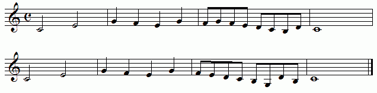
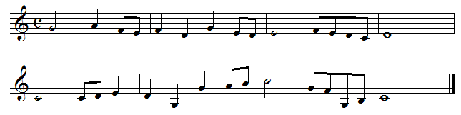

So then, can both be considered fractal with respect to note duration?
|  |
| No. The first example simply states the sorted set of values, starting with the second longest duration, proceeding to the shortest, and then wrapping back around to the longest. |
| Furthermore, each measure contains only a single duration value. |
| There is no suggestion of a distribution of elements sufficiently heterogenous that a given sub-region might contain, on average, roughly the same distribution as the whole piece. |
|  |
| The second example, by contrast, is a far more convincing. With the exception of measures 4 and 8, which are filled by whole notes, each measure contains some combination of different duration values. |
Return to Duration Scaling.
© 2004 Harlan Brothers